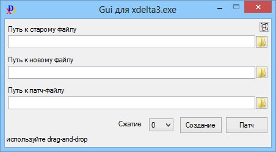

xdelta3_Gui
Назначение
Оболочка для утилиты xdelta3.

Gui_xdelta3 - оболочка для консольной утилиты xdelta3.exe
Для создания патча на основе двух файлов и патча указанного файла с сохранением нового
Сжатие указывается от 0 до 9, только при создании патча
Строка состояния отображает результат выполнения (успешное или неудачное выполнение операции)
Gui_xdelta3.ini - файл настроек позволяет оформить утилиту для своих нужд
1. Пути. Здесь всё просто, указанные пути будут вставлены при запуске. Если указанный путь не полный, то вставляется относительно текущего каталога
2. Title - Заголовок окна
3. icon - иконка окна. Это может быть dll с номером иконки, например "shell32.dll,25" или ico-файл без номера иконки. Полный или относительный путь.
4. Compressing - уровень сжатия
5. Параметры с суффиксом Hide позволяют скрыть элемент, кнопку или выбор сжатия. При этом сжатие всё равно учитывается в параметре Compressing
6. Параметры Comm_Patch, Comm_Create позволяют добавить ключи к xdelta3.exe, например "-S djw". По умолчанию при создании используется обязательный ключ -e, а при патче обязательный ключ -d и ключ сжатия, если указано в ini или в gui. Полезно добавить ключ -f, (Comm_Patch=-f) чтобы принудительно перезаписывать существующий файл при патче, аналогично для Comm_Create.
Скачать xdelta3.exe можно отсюда: http://code.google.com/p/xdelta/downloads/list
Например файл xdelta3.0z.x86-32.exe и потом переименуйте его в xdelta3.exe
Официальный сайт xdelta3.exe : http://xdelta.org/